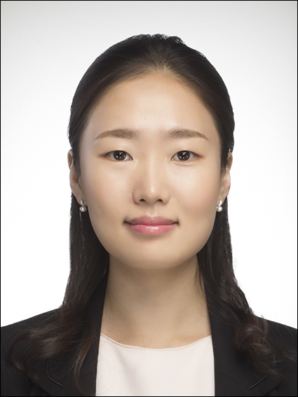

Professor교수 소개

Min Jung Geum, Ph.D.금민정 교수
Assistant Professor, College of Pharmacy, Hanyang University ERICA한양대학교 ERICA 약학대학 조교수
Clinical Pharmacy Oncology PharmacyEducation학력
2021 · Ph.D. in PharmacyEwha Womans University
2015 · M.S. in Clinical PharmacyEwha Womans University
2010 · B.S. in PharmacyEwha Womans University
Appointments & Experience주요 경력
2026–PresentAssistant Professor, Hanyang University
2022–2026Adjunct Professor, Ewha Womans University
2022–2026Lecturer, Yonsei University
2011–2026Pharmacist, Severance Hospital, Yonsei University Health System
2010–2011Resident Pharmacist, Severance Hospital
Professional Credentials전문 자격
Board Certified Oncology Pharmacist, 2019–Present
Oncology Pharmacy Specialist, 2014–Present종양약료 전문약사 (2014–Present)
Selected Awards주요 수상
2025 · Academic Excellence Award, Hospital Pharmacy Education and Research Foundation
2023 · Grand Prize for Best Poster, Korean Pharmacists Academic Festival
2022 · Commendation, Seodaemun-gu Pharmaceutical Association
2019 · Commendation, Ministry of Food and Drug Safety